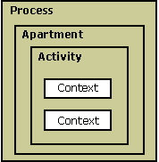

COM+ threading models are designed around an object collection called an apartment. An apartment is a collection of contexts contained in a process, as shown in the following illustration.

Calls within an apartment are direct, while calls across apartments (out-of-process) are indirect and require proxy and stub code. Apartments allow for objects with different synchronization and reentrancy properties and have two categories: single-threaded and multithreaded. Objects in a single-threaded apartment (STA) execute on the particular thread in which they were created. STAs allow only one method to execute at a time. They are designed for user interfaces and rely on the Microsoft Windows message queue to process incoming calls.
Objects in a multithreaded apartment (MTA) execute on any thread and allow any number of methods to occur simultaneously. MTAs support reentrance implicitly.
COM+ classes are marked with a ThreadingModel property that allows COM+ to create the object in the proper apartment. To determine which apartment an object is created in, CoCreateInstance uses the ThreadingModel property.
Threads must call CoInitializeEx before they can use COM+. This creates them inside the correct apartment and context. The main thread apartment is determined to be the first STA called by CoInitializeEx. This is usually associated with the main thread of a process. CoInitializeEx indicates the type of apartment required by the thread by setting the following flags:
The following topics in this section provide more information about using threading models and apartments in COM+:
Processes, Threads, and Apartments
Â
Â